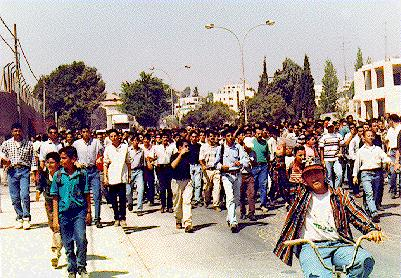
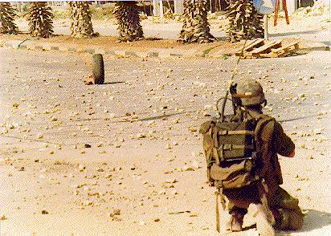
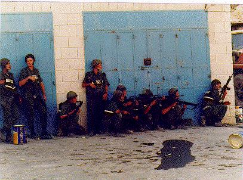

Photo Diary
Day 1: Wednesday 25th September 1996, "Demonstration at Khamara Checkpoint"

Students joined with many other Ramallans after they were prevented from travelling to Jerusalem, both groups numbering around 800 in total. Photo by Yasser Darweesh
______________________________________________________________________

A burning tire rolls towards an Israeli soldier. Photo by Yasser Darweesh
______________________________________________________________________

Israeli soldiers take cover from stones and prepare to go into action. Photo by Yasser Darweesh
Click here for NEXT ENTRY
Click here for PHOTO DIARY
INDEX
_______________________________________________________
Website and related material from Birzeit University staff
High resolution photos available by request.
Contact nparry@admin.birzeit.edu.